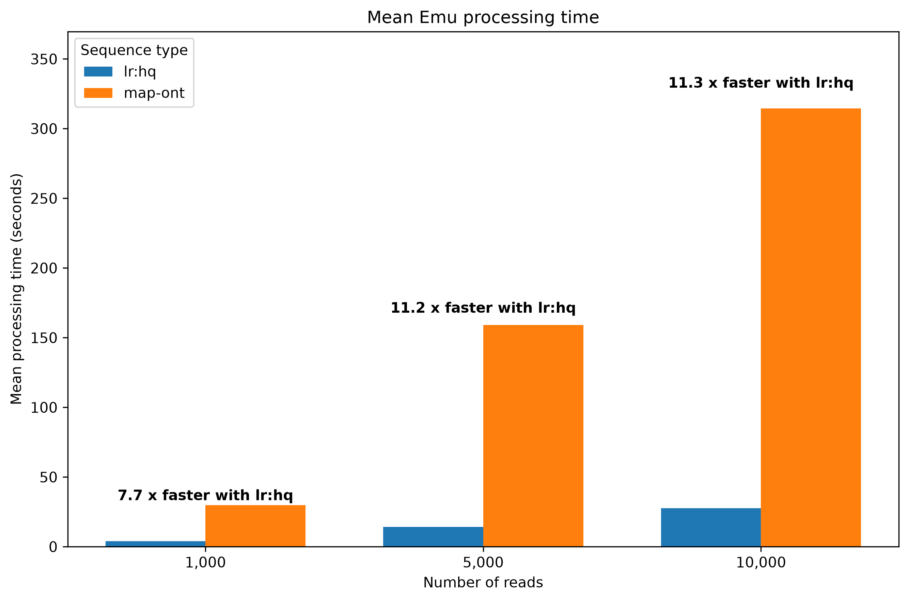

The lr:hq minimap2 profile speeds up Emu by an order of magnitude for 16S data
Emu is a popular read classifier and abundance estimator for 16S sequencing (sequencing of the 16S ribosomal RNA subunit, which is a common method for determining the abundance of bacteria in a sample, typically at the granularity of genus and/or species). We use it incorporated into the Trana pipeline for a selection of 16S sequencing samples at the Karolinska Hospital.
Emu was specifically created to account for the generally lower accuracy of Oxford Nanopore (ONT) reads. Although this situation has drastically improved in the later years, with new flow cells and basecalling models, the error rate still typically remains around 1%, which, especially for a very sensitive analysis like 16S sequencing, is significant.
The basic idea in Emu is to start off with aligning (using minimap2) every
single read in the sample towards each sequence in the database in order to
gauge the relative probabilities of the main mismatch types (insertions,
deletions, mismatches and soft-clips), to feed them into the probabilistic
model. Based on our own informal profiling, the majority (~95%) of the
execution time in Emu is spent in this initial alignment phase.
In our work to set up a clinical pipeline for 16S sequencing we’ve had to think hard about how to manage the required runtimes of Emu in order to be able to finish our computational pipeline together with the actual sequencing overnight, to keep the turn-around-time in check.
We are running the pipeline on the GridIon instrument itself , and with downsampling all samples to 30k reads, this has allowed us to keep typical Emu runs for up to 24 samples into an 8 hour window on the 16 cores (64GB RAM) available. Thus, we have so far been limiting the sequencing to 8 hours to give that 8 hour window for the pipeline.
This works, but also puts a bit of a limit on the scalability if we would like to, say, run more than one flow cell at a time, or connect a P2 Solo to run much more than 24 samples, or to increase the number of reads per sample.
We are thus quite interested in anything that can speed up the Emu process. I
was thus very interested when I read about Michael Hall’s evaluation
of
the new lr:hq profile for minimap2, optimized for higher quality data from
R10 ONT flow cells, and how it seems to improve quality also of downstream
analyses.
I got interested in seeing also how it affected the performance of the alignment. Some initial tests immediately revealed that we hit gold here! The performance is actually improved with at least around one order of magnitude for the alignment process specifically, and even the Emu and Trana processes are drastically sped up, due to the fact that the alignment part has constituted such a big fraction of the computing time.
Performance comparison
Below are some simple performance comparisons for running Emu with lr:hq
compared with the older map-ont setting for the alignment, to back this up.
Methods and data
The required software, scripts and data to try out this comparison is available in a GitHub repo , but I’m including the key information here as well for future proofing.
To create a test that is easily reproducible by anyone else, I have here used the publicly available Zymomock Gut mock data, available via the ONT website.
The commands I’ve used to download, extract, convert and subsample the data in my test are:
sci run aws s3 sync --no-sign-request s3://ont-open-data/zymo_16s_2025.09 zymo_16s_2025.09
i=1;
for f in zymo_16s_2025.09/basecalls/GutMock/MAB114/sup/rep1/*.bam; do
sci run "samtools fastq ${f} > rep${i}_$(basename ${f%.bam}.fastq)";
i=$((i + 1));
done
for f in *_0.fastq; do
sci run "seqkit seq -m 1200 -M 1800 ${f} | seqkit sample -n 1000 > ${f%.fastq}_sub1000.fastq";
done;
for f in *_0.fastq; do
sci run "seqkit seq -m 1200 -M 1800 ${f} | seqkit sample -n 5000 > ${f%.fastq}_sub5000.fastq";
done;
for f in *_0.fastq; do
sci run "seqkit seq -m 1200 -M 1800 ${f} | seqkit sample -n 10000 > ${f%.fastq}_sub10000.fastq";
done;
As you will see, I actually used only one of four available SUP-basecalled fastq files here, but I wanted to keep the script easy to extend to more datasets if needed, thus retaining the loop.
As you can also see, I start with filtering for reads between 1200 to 1800 bp in length, to avoid serious outliers, and as this is also the setting we run in production, followed by downsampling into three sizes, 1000, 5000 and 10000 reads, to get a sense for how the differences scale with size.
I also checked out the emu repository in order to have access to its default database:
git clone https://github.com/treangenlab/emu.git
Then for running the actual analysis, I did:
mkdir -p timings;
for f in *_sub1000.fastq; *_sub5000.fastq *_sub10000.fastq; do
for align_type in map-ont lr:hq; do
outdir=out-${align_type};
mkdir -p ${outdir};
outfile_base=$(basename ${f%.bam});
hyperfine \
--warmup 1 \
--runs 3 \
--export-csv timings/${outfile_base}_${align_type}.csv --export-json timings/${outfile_base}_${align_type}.json \
"emu abundance ${f} --type ${align_type} --db emu/emu_database --output-dir ${outdir}/${outfile_base} --keep-files --keep-counts --keep-read-assignments --threads 12";
done
done
So here we are running Emu both with the original map-ont alignment type as
well as lr:hq, for all the three sizes of dataset, and doing that three times
per run with one warmup run (via the hyperfine commandline timing tool).
Results
The results of running the above timing are quite striking:

In tabular format, that is:
| Number of reads | Alignment type | Running time (s) |
|---|---|---|
| 1000 | lr:hq | 3.881 |
| 1000 | map-ont | 29.728 |
| 5000 | lr:hq | 14.172 |
| 5000 | map-ont | 159.098 |
| 10000 | lr:hq | 27.710 |
| 10000 | map-ont | 314.376 |
So that is pretty much an order of magnitude improvement across the board! And this is even though the alignment part is not the only thing taking time in Emu, although it is surely the major part.
Now, this is a small, isolated test with a single dataset. But we can also say we have seen improvements in the same ballpark across datasets and dataset sizes wherever we have tried.
Hope this will at least inspire you to try out the new lr:hq setting!